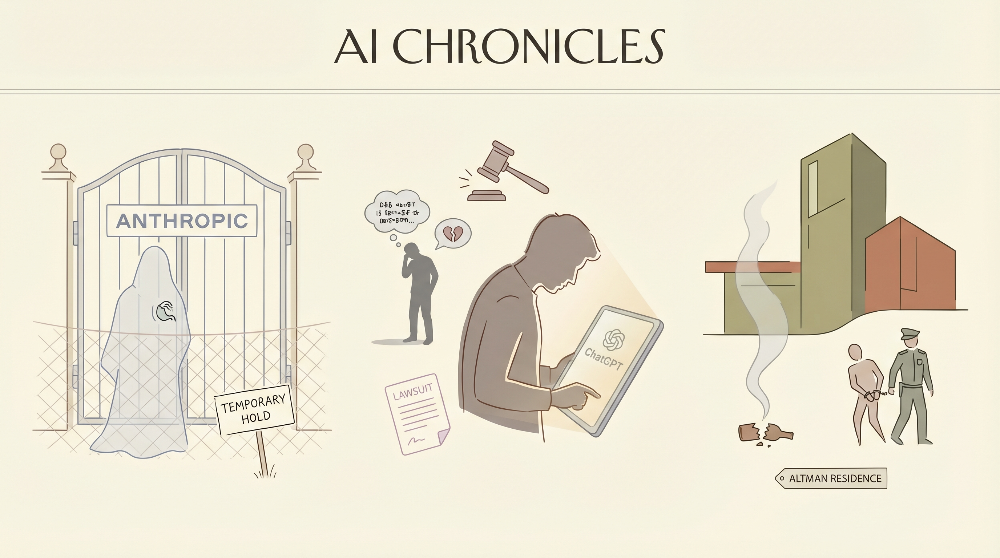

Anthropic禁止OpenClaw的创建者访问Claude，因价格变动问题。
两克伴AIGC日报
2026-04-11 星期六

本期关注：Anthropic的Mythos模型被指具黑客攻击潜力，引发网络安全领域对AI安全的重新审视；同期行业频发安全争议，包括用户起诉OpenAI、CEO遇袭及算力合作，凸显AI发展中的安全与伦理挑战。
📰 行业动态
受害者起诉OpenAI，称ChatGPT助长施暴者幻觉并忽视警告。
20岁男子因涉嫌向OpenAI CEO Sam Altman家投掷燃烧弹被捕。
Anthropic租用CoreWeave算力支持Claude AI模型。
英特尔与谷歌达成新AI基础设施合作协议。
🔥 今日焦点
Anthropic公司推出的新AI模型Mythos，引发了业界的广泛关注和担忧。这款模型被誉为一款黑客的超级武器，其到来被视为对长期以来将安全视为事后之想的开发者的警钟。Mythos的出现，不仅预示着AI技术在网络安全领域的巨大潜力，也暴露了当前AI安全研究的不足。
Mythos的核心功能在于其强大的攻击能力，这使得它成为黑客的理想工具。然而，这也意味着AI安全领域将面临前所未有的挑战。专家们指出，Mythos的问世迫使开发者重新审视AI安全的重要性，并推动相关研究的深入发展。
TechCrunch即将进军东京，并将Startup Battlefield活动一同带来。此次SusHi Tech 2026聚焦于四个重塑社会的技术领域：人工智能、机器人、韧性和娱乐。活动将呈现人形机器人的现场演示、关于自动驾驶软件革命的研讨会、深入探讨网络安全和气候技术，以及关于人工智能如何重新定义全球音乐和动漫产业的坦诚对话。
此次活动的举办具有重要意义，因为它不仅展示了全球科技创新的最新趋势，也为AI领域带来了新的机遇。在人工智能领域，活动的关注点将推动行业内的技术交流和合作，促进相关领域的研究和应用。此外，通过展示人工智能在音乐和动漫产业中的应用，活动将激发更多创新思维，为AI在文化产业的应用提供新的思路。
📚 深度长文
本文深入探讨了OpenAI的语音模式，指出其运行在较旧、较弱的模型上，与人们对于智能AI的期待存在较大差距。文章以ChatGPT语音模式的截止日期为例，指出其仍处于GPT-4o时代，而非最新的GPT-4。作者引用了Andrej Karpathy的推文，指出不同模型在不同领域的应用能力存在巨大差异，OpenAI的免费语音模式在处理简单问题时可能显得笨拙，而付费的Codex模型则能在复杂任务中表现出色。本文揭示了AI能力与使用场景之间的关联，为AI从业者提供了独特的视角和深入思考。
***
《2026.15: Myth and Mythos》一文，由Ben Thompson撰写，收录了2026年4月6日一周内Stratechery的最佳内容。文章深入探讨了Anthropic、纽约时报以及一次范式转变等话题，并详细解读了《纽约客》对Sam Altman的报道。核心观点在于揭示科技行业背后的神话与神话学，以及这些神话如何影响行业发展和公众认知。
文章以Anthropic为例，分析了人工智能领域的最新进展及其对人类社会的影响，揭示了科技巨头在推动技术进步中的角色。同时，通过对纽约时报和《纽约客》的案例分析，探讨了媒体在塑造公众对科技行业认知中的作用。Ben Thompson以其独特的视角，指出科技行业存在的一系列神话，如“技术万能论”和“创新无限论”，并指出这些神话可能带来的风险。
🛠️ 产品推荐
Show HN: TopRank是一款开源的Claude代码技能工具，专注于SEO和Google Ads优化。该产品通过整合AI技术，为用户提供高效、精准的代码优化方案，助力提升网站排名和广告投放效果。TopRank的核心功能在于利用Claude算法，分析网站代码，提供针对性的优化建议，帮助用户快速提升网站质量和广告投放效果。对于技术从业者而言，TopRank无疑是一款极具价值的开源工具，能够有效解决SEO和Google Ads优化难题，提高工作效率。
***
Show HN: Agentic Web :handshake: Human Web是一款基于人工智能技术的网络平台。该平台通过先进的AI算法，实现人与机器之间的智能交互，为用户提供个性化、智能化的网络服务。Agentic Web旨在解决传统网络信息过载、用户体验不佳等问题，通过智能推荐、智能搜索等功能，提升用户在网络中的信息获取效率，优化用户体验。其AI能力和创新点在于，通过深度学习技术，实现个性化推荐，满足用户个性化需求，推动网络信息服务的智能化发展。
***
Show HN: Economy AI agents form teams, run missions, earn commissions是一款基于AI的智能经济模拟平台。该平台通过AI智能代理形成团队，执行任务，赚取佣金。用户可以在此平台上体验AI驱动的经济活动，提高决策效率，降低人力成本。产品创新性地运用AI技术，为用户提供了一个全新的经济模拟与互动体验，助力用户在虚拟经济环境中提升竞争力。
***